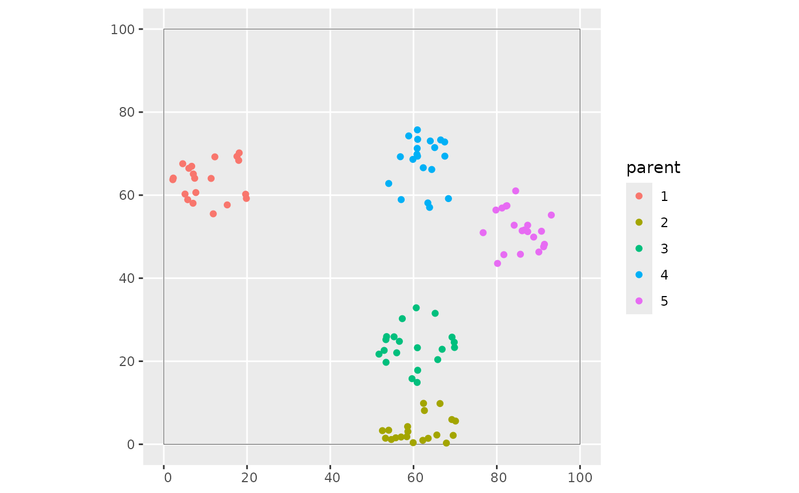

A simple procedure to simulate clustered points based on a two-step sampling.
Details
A simple procedure to simulate clustered points based on a two-step sampling. First, a pre-specified number of parents are simulated using random sampling. For each parent, `(nsamples-nparents)/nparents` are simulated within a radius of the parent point using random sampling.
Examples
# Simulate 100 points in a 100x100 square with 5 parents and a radius of 10.
library(sf)
#> Linking to GEOS 3.12.1, GDAL 3.8.4, PROJ 9.4.0; sf_use_s2() is TRUE
library(ggplot2)
set.seed(1234)
simarea <- list(matrix(c(0,0,0,100,100,100,100,0,0,0), ncol=2, byrow=TRUE))
simarea <- sf::st_polygon(simarea)
simpoints <- clustered_sample(simarea, 100, 5, 10)
simpoints$parent <- as.factor(simpoints$parent)
ggplot() +
geom_sf(data = simarea, alpha = 0) +
geom_sf(data = simpoints, aes(col = parent))
